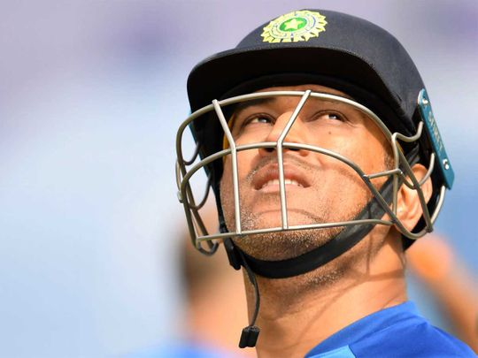
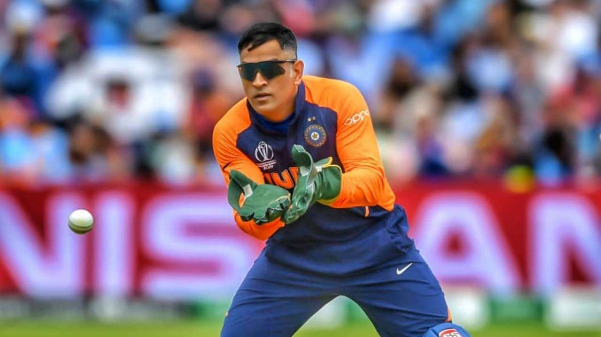
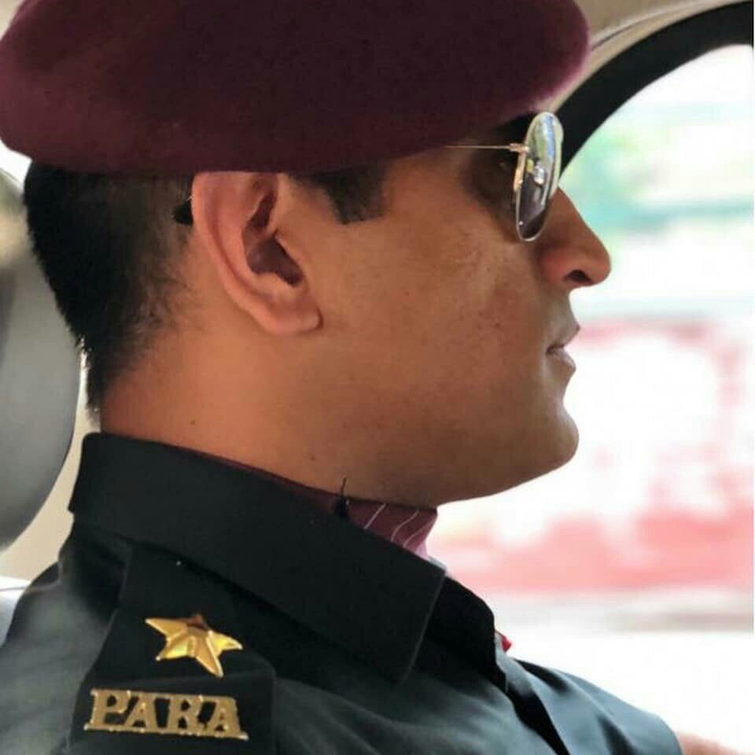
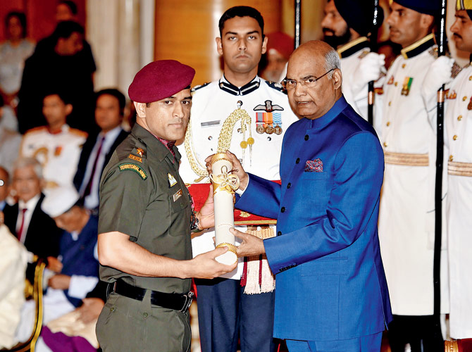
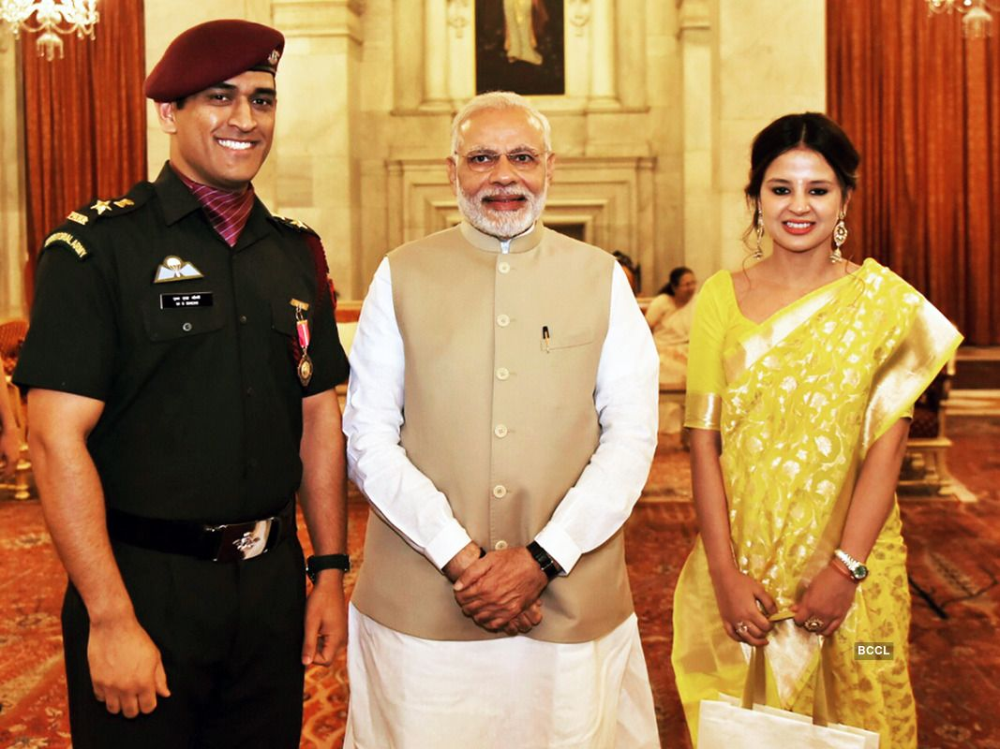
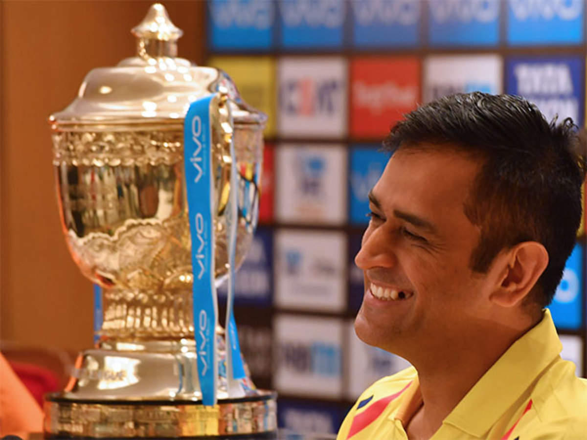
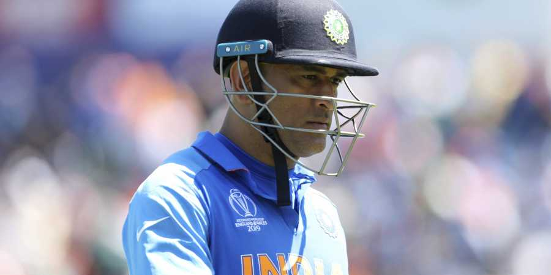
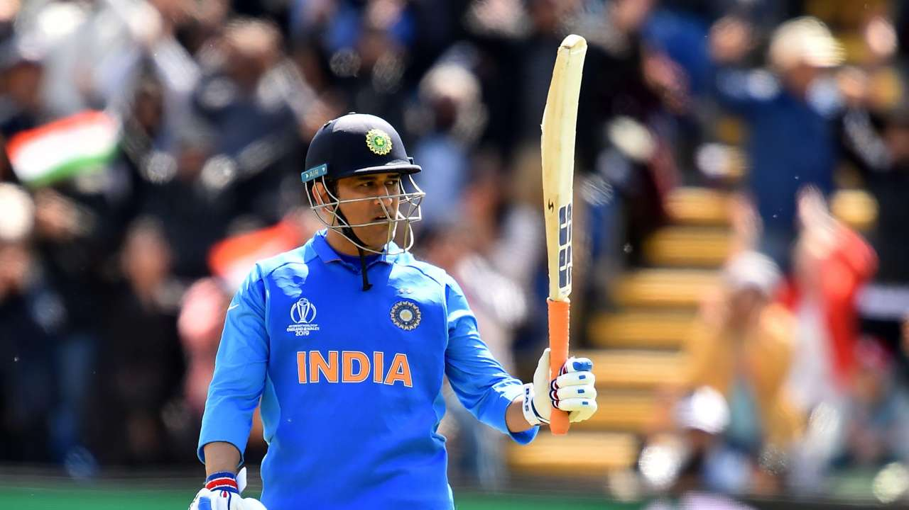
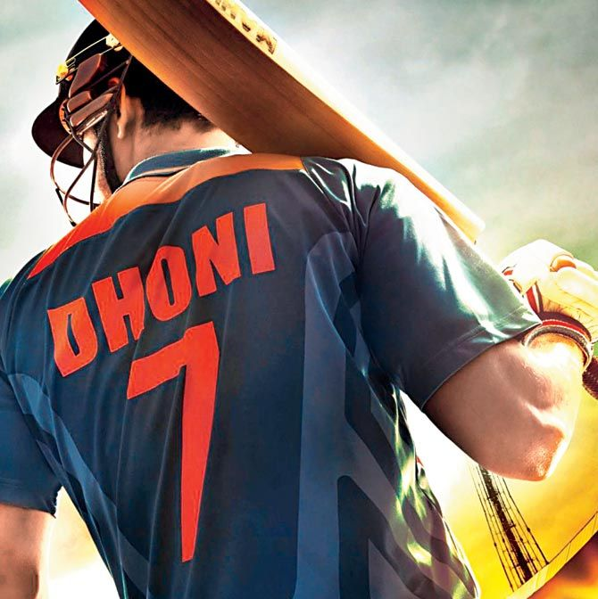

M.S Dhoni



"Mahendra Singh Dhoni"
"M.S Dhoni is an Indian former Batsman and wicketkeeper. Who captained the Indian international cricketer who capatained the Indian national team in limited-overs formats from 2007to2016 and in Test cricket from 2008 to 2014."
Dhoni in Indian Army

"Dhoni Works in Indian Army also."
"M.S Dhoni:The Untold Story."

"M.S Dhoni:The Untold Story."
"A Biopic Film is Made on Dhoni Name-"M.S Dhoni:The Untold Story Who Plays the role of Dhoni. He is Actor-"Shushant Singh Rajput""


"M.S Dhoni recieved country's third highest civillian award,Padma Bhusan,From President Ram Nath Kovind. The former India captain,who holds the rank of Honary Lieutenant Colonel,wore his official uniform of the Territorial Army for the ceremony."

"A Pic During Pandma Bhusan With our Prime Minister-"Narendra Modi"With his Wife Sakshi Dhoni.""

"Dhoni wons India World Cup atleast 3 Times.Under his captaincy,India Won the inaugral 2007 Icc World Twenty20,the 2010 and 2016 World Cup."


"Dhoni is also Captain of CSK (Chennai Super Kings) CSK wins atleast 4 Times in IPL."


"Captain Cools Retire"In 15 August M.S Dhoni Announced Retire From International Cricket.

"We Will Miss You Dhoni in International Matches."
A Tribute To M.S Dhoni